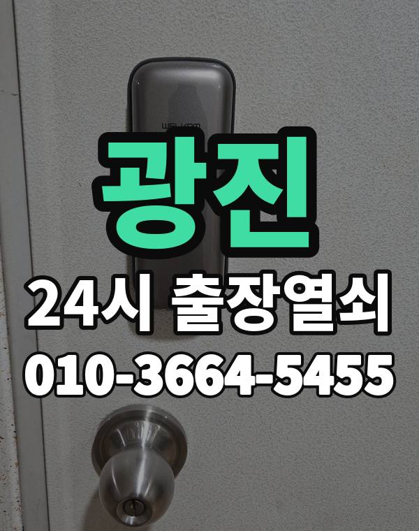

광진은 이런 곳입니다
광진구는 자양동, 구의동 아파트와 화양동, 건대 주변 원룸이 많은 동네입니다.
원룸 건물은 현관 도어락과 건물 공동현관이 따로라 둘 다 확인이 필요합니다.

광진구 출장 가는 동네
- 자양동
- 구의동
- 광장동
- 화양동
- 군자동
- 중곡동
- 능동
자양동 출장열쇠, 구의동 열쇠집처럼 동네 이름으로 찾으셨어도 같은 곳입니다.
적혀 있지 않은 동네도 광진구 안이면 다 갑니다.
광진에서 맡기실 수 있는 일
광진 출장 부르실 때
자취하는 분들은 비밀번호 분실이나 배터리 방전 연락이 많습니다.
집주인 연락이 안 돼도 사시는 분이 확인되면 열어 드립니다.
건대입구역, 구의역, 군자역, 아차산역 근처라고 말씀해 주셔도 위치 잡기가 쉬워집니다.
가까운 역이나 큰 건물, 단지 이름을 같이 알려주세요.
- 정확한 주소, 아파트라면 동과 호수
- 번호판 상태 (꺼짐, 켜짐, 경고음)
- 거주 확인용 신분증이나 주소 나온 우편물
전화부터 작업까지 순서는 이용안내에 적어 두었습니다.
광진 출장열쇠 관련 글
- 서울 광진 군자동 열쇠집 고를 때 전화로 먼저 물어볼 것들
- 광진 군자동 손님·도우미에게 임시 비밀번호 알려주는 요령과 지우는 때
- 광진 구의동 세입자와 집주인이 도어락 문제를 정리할 때 미리 맞춰 볼 사항
- 광진구 구의동 열쇠를 잃어버리고 문까지 잠겼을 때 차례로 할 일
- 광진 광장동 베란다·미닫이·방문 잠금장치가 말썽일 때 살펴볼 곳
- 광진 광장동 셰어하우스·자취방 출입문, 여럿이 쓰는 문이 잠겼을 때 풀어 가는 법
- 광진구 화양동 원룸 도어락, 장마와 겨울 결로로 오작동할 때 손보는 법
- 광진구 화양동 원룸 문 열기 전 신분 확인은 어떻게 하나요
- 광진 자양동 문을 연 다음 꼭 해 둘 마무리 점검과 재발 막는 법
- 광진구 자양동 이사 후 도어락 초기화, 전에 살던 분 번호 지우기부터
- 광진구 중곡동 현관 손잡이가 헐겁고 헛돌 때 점검 포인트
- 광진구 중곡동 도어락 교체, 견적 전화 전에 챙겨 둘 다섯 가지
- 서울 광진 능동 현관 방범 점검, 혼자서도 해 보는 차분한 체크리스트
광진 출장열쇠 자주 묻는 질문
광진 어디까지 출장 오시나요?
자양동, 구의동, 광장동, 화양동, 군자동, 중곡동 등 광진구 전 지역 갑니다. 목록에 없는 동네도 전화로 위치만 알려주시면 됩니다.
광진 늦은 시간 출장도 되나요?
밤이든 새벽이든 받습니다. 어디인지 들으면 언제쯤 도착하는지 바로 말씀드립니다.
끝내 못 열면 돈은 어떻게 되나요?
열지 못하면 비용은 없습니다. 작업 전에 금액을 듣고 정하시면 됩니다.
집주인이 아니어도 열어 주나요?
사시는 분인지 신분증, 주소가 나온 우편물, 관리사무소 확인 중 하나로 확인한 뒤 엽니다.
광진 도어락 새로 다는 것도 되나요?
네, 수리와 설치, 교체 모두 합니다. 고쳐서 쓸 수 있으면 고치는 쪽을 먼저 말씀드립니다.